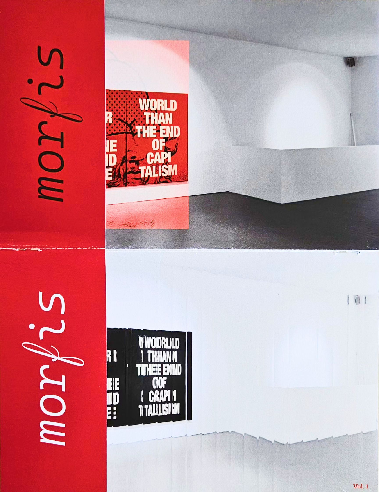
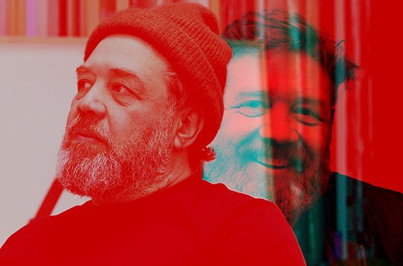
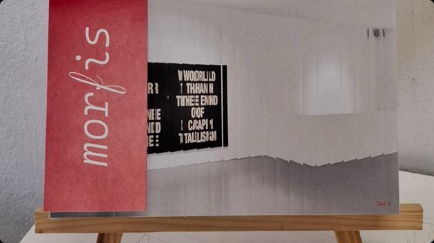
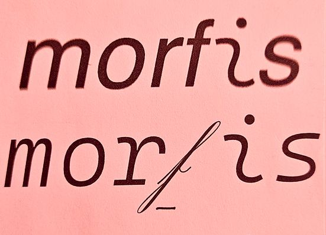
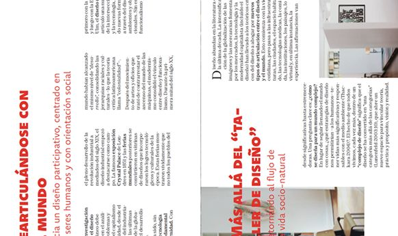
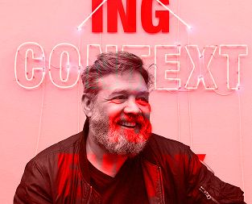
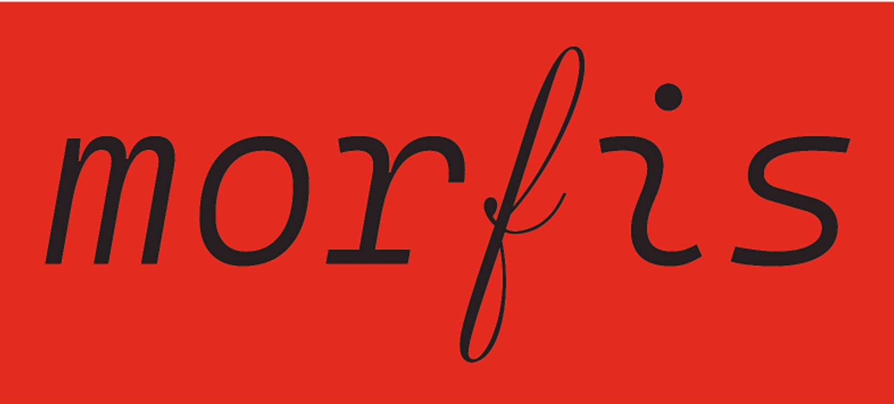
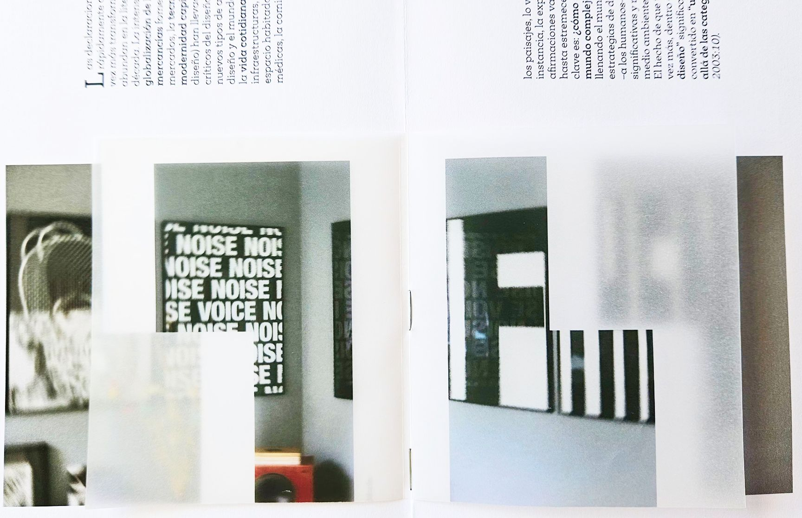
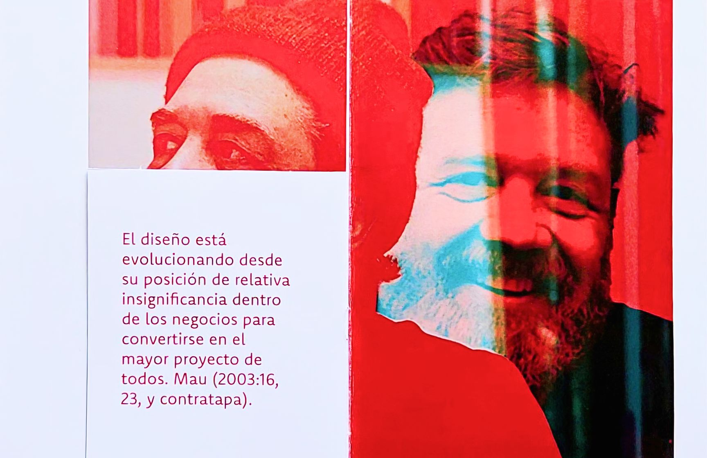

Desarrollo grupal de un sistema gráfico para una publicación editorial inspirado en la visión de diseño situado de Arturo Escobar.
A través de los conceptos de transformación, sintonía y comunidad, se construye una identidad visual que representa un diseño orgánico e interconectado, donde las diferencias individuales conviven y se complementan.



- Créditos:
- Camila Canales
Isidora González - Constanza Jara - Año - duración:
- 2025 - 1 mes
- Software:
- Adobe Illustrator, Adobe Photoshop, Adobe Indesign.
Proceso e ideación





